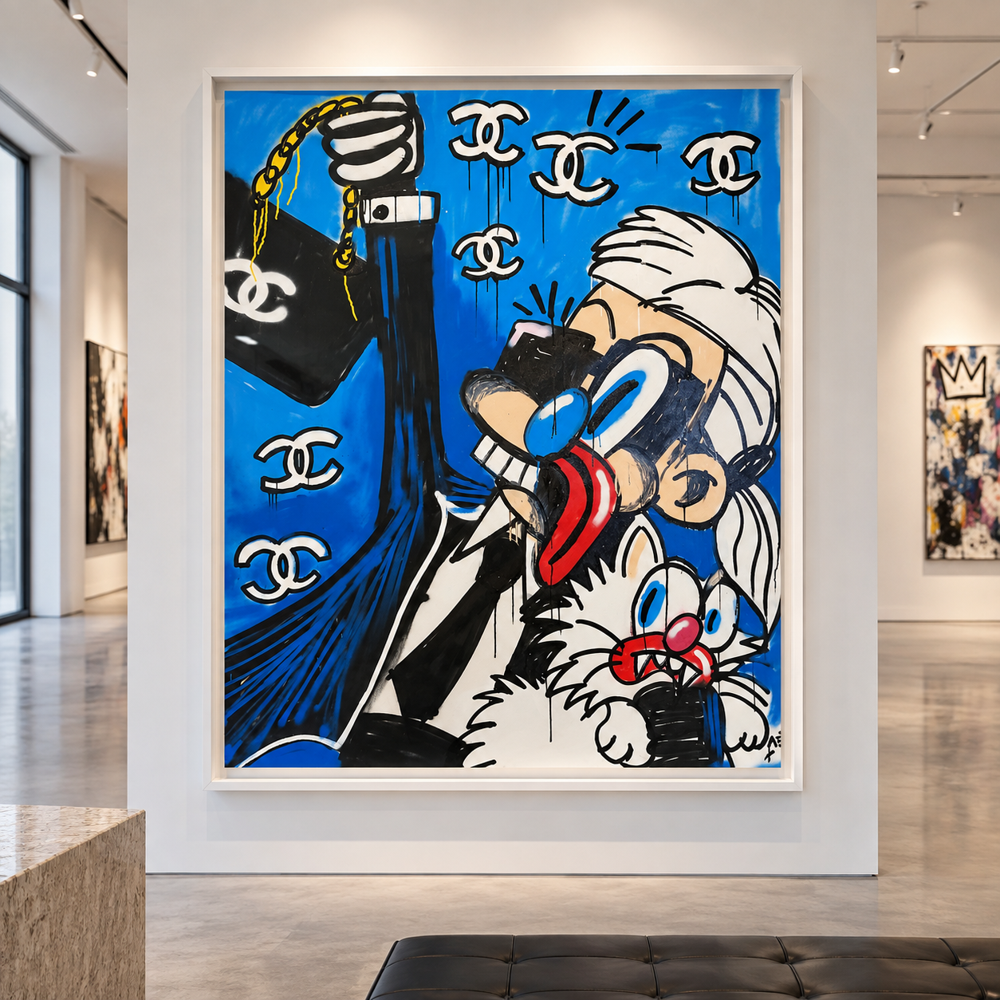
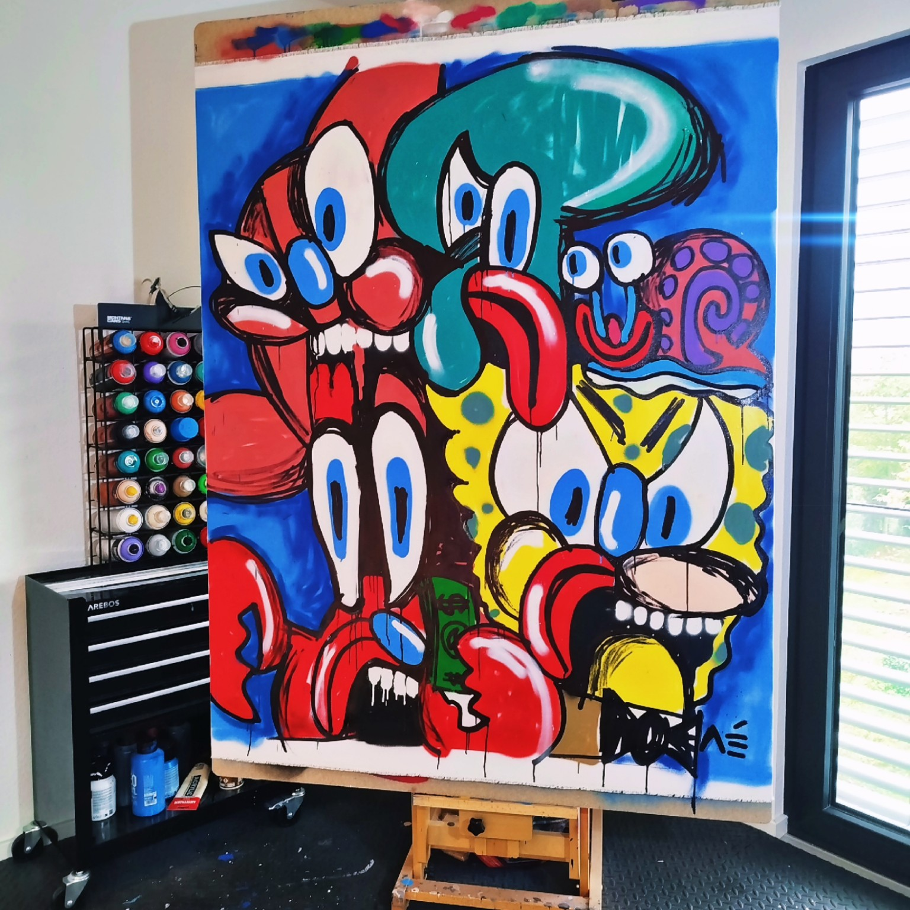
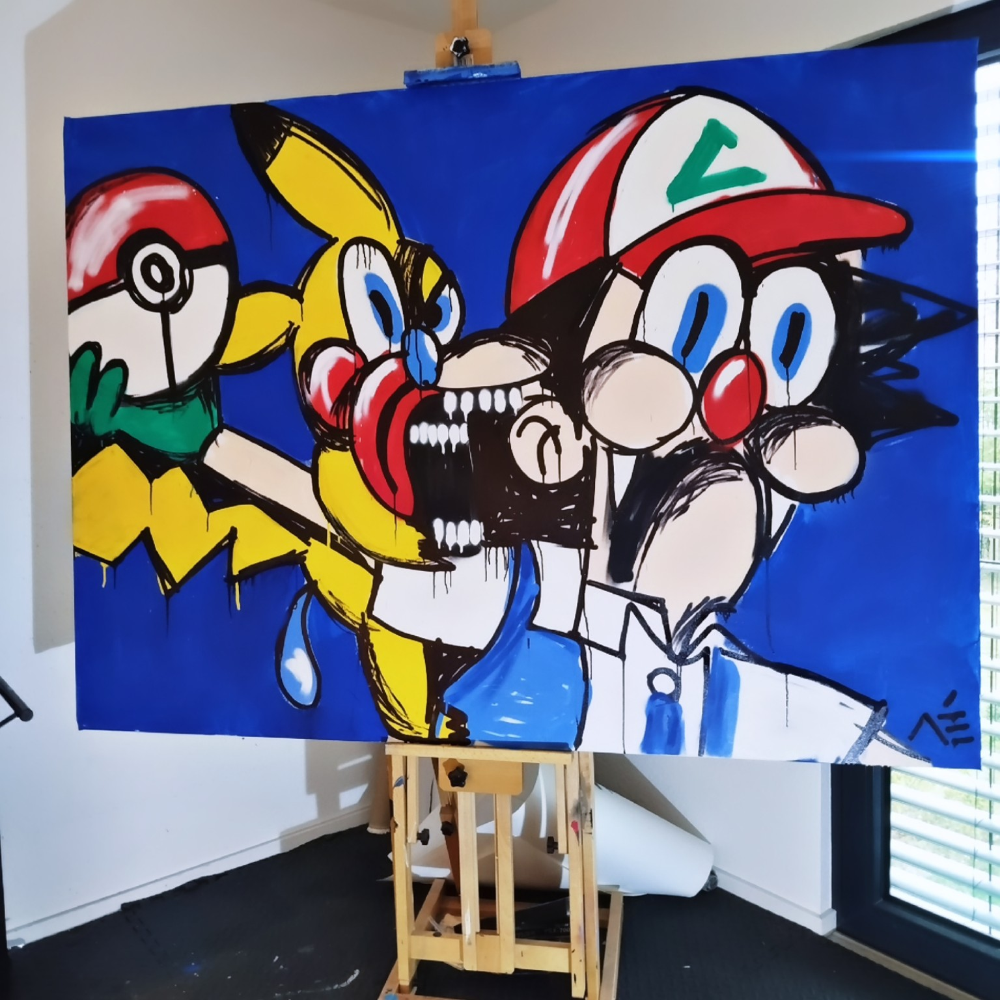
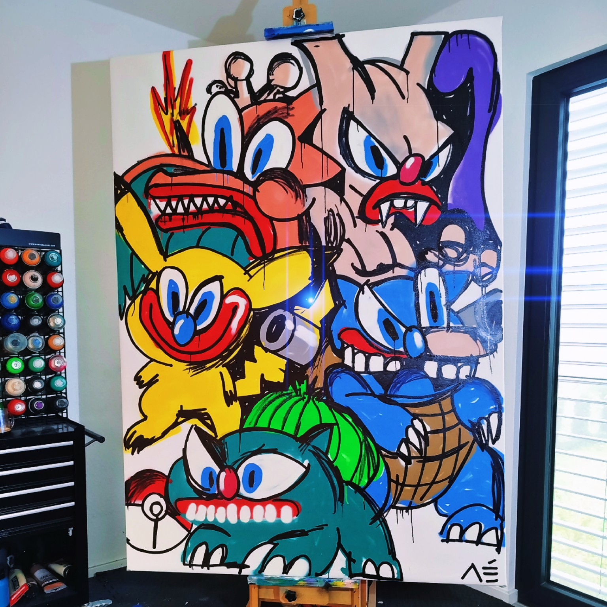
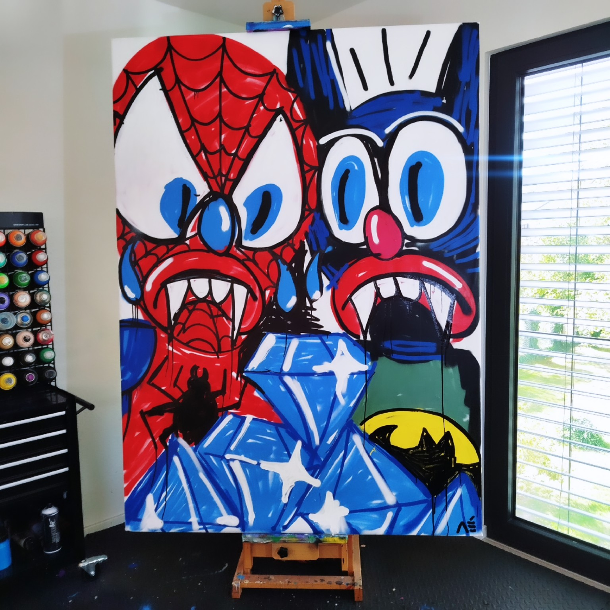

Manuel Mané
Contemporary Artist · Germany
Neo-Pop Expressionism
The Artist
Art without boundaries.
Manuel Mané is a German contemporary artist and self-taught Neo-Pop Expressionist, born in 1985. Inspired by the raw energy and expressive freedom of Jean-Michel Basquiat, he began painting in 2018. His artistic vision draws from pop culture, music and fashion, blending these influences into a bold and unconventional visual language.
Painting became a way to process difficult emotions, escape the world around him and create a space where inner struggles could be expressed without words.
Following his leukemia diagnosis in 2026, exaggerated, intensely laughing faces became the first step in his process of emotional confrontation. Behind their apparent joy lay a deeper reality — a contrast between outward laughter and inner despair.
Later, vampire figures emerged as a new visual language through which he explored the physical and emotional realities of the disease, including the associated anemia. These figures became a means of confronting vulnerability, suffering and mortality.
Working on a large scale, Manuel Mané seeks to translate emotion, creativity and raw energy into powerful visual experiences. His oversized paintings give his expressive characters, bold gestures and intense colours room to unfold, inviting viewers to experience the work beyond its individual details.
His work has been exhibited in Paris and has found its way into the collections of art collectors around the world.
Through an uncompromising visual language, Manuel Mané combines personal experiences with contemporary culture, creating art that is instinctive, raw and unapologetically expressive.
Selected Works
Artworks



